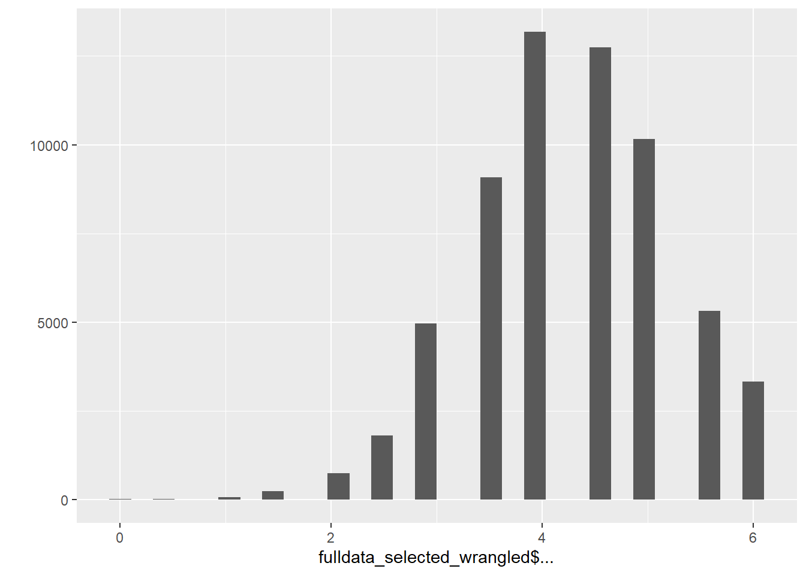

Data Wrangling
Library
## Loading required package: carData##
## Attaching package: 'psych'## The following object is masked from 'package:car':
##
## logit##
## Attaching package: 'ggplot2'## The following objects are masked from 'package:psych':
##
## %+%, alpha##
## Attaching package: 'codebook'## The following objects are masked from 'package:formr':
##
## aggregate_and_document_scale, expired, rescue_attributes,
## reverse_labelled_values## The following object is masked from 'package:psych':
##
## bfi##
## Attaching package: 'dplyr'## The following objects are masked from 'package:formr':
##
## first, last## The following object is masked from 'package:car':
##
## recode## The following objects are masked from 'package:stats':
##
## filter, lag## The following objects are masked from 'package:base':
##
## intersect, setdiff, setequal, unionData
Load selected data based on 00_dataimport
Inspect Data
## [1] "political_orientation" "age"
## [3] "interest_single" "interest_sexrel"
## [5] "interest_nonmonrel" "interest_monrel"
## [7] "pref_politicalsim" "pref_ethnicalsim"
## [9] "pref_religioussim" "pref_level_kind"
## [11] "pref_level_supportive" "pref_level_attractive_body"
## [13] "pref_level_attractive_face" "pref_level_financially_secure"
## [15] "pref_level_successful_ambitious" "pref_level_confident"
## [17] "pref_level_assertive" "pref_level_intelligence"
## [19] "pref_level_educated" "imp_age"
## [21] "ideal_age" "imp_height"
## [23] "ideal_height" "country"
## [25] "language" "sex"
## [27] "sexual_orientation" "relationship"
## [29] "relationship1" "relationship2"
## [31] "relationship3" "relationship4"
## [33] "relationship5" "answer_accuracy"Age
Participants younger than 18 were able to insert age but the survey was ended for them afterwards.
##
## 0 1 2 5 8 10 11
## 12 5 4 2 1 13 121
## 12 13 14 15 16 17 18
## 615 1701 3225 5361 7594 7984 14137
## 19 20 21 22 23 24 25
## 6613 5217 4535 3753 3341 2997 2833
## 26 27 28 29 30 31 32
## 2619 2432 2275 2022 1917 1578 1483
## 33 34 35 36 37 38 39
## 1265 1152 1052 949 779 721 607
## 40 41 42 43 44 45 46
## 610 464 494 408 323 317 231
## 47 48 49 50 51 52 53
## 214 167 112 103 61 57 30
## 54 55 56 57 58 59 60
## 27 32 20 15 16 8 12
## 61 62 63 64 65 66 67
## 5 6 8 11 5 11 6
## 68 69 70 71 73 75 76
## 7 3 8 6 2 2 1
## 77 78 80 85 100 111 116
## 1 2 1 1 1 1 1
## 160 175 183 210 222 223 247
## 1 1 1 1 1 1 1
## 293 447 789 1516 36015310 5090897866
## 1 1 1 1 1 1Set all numbers > 100 as missing:
## [1] 15# This means that age is set as missing for 15 people
fulldata_selected_wrangled = fulldata_selected_wrangled %>%
mutate(age = ifelse(age > 100, NA, age))
table(is.na(fulldata_selected_wrangled$age))##
## FALSE TRUE
## 94723 15##
## FALSE TRUE
## 68085 26638Political Orientation
Political Orientation item should range from 0 to 6
## $political_orientation
##
## 0 1 2 3 4 5 6
## 6354 8870 11049 18306 5148 1984 1364## Warning: `qplot()` was deprecated in ggplot2 3.4.0.
## This warning is displayed once every 8 hours.
## Call `lifecycle::last_lifecycle_warnings()` to see where this warning was
## generated.## `stat_bin()` using `bins = 30`. Pick better value with `binwidth`.## Warning: Removed 41663 rows containing non-finite values (`stat_bin()`).
Preferred Relationship Options
Interest in being single, interest in sexual (non-romantic) relationships, interest in non-monogamous relationships and interest in monogamous relationships items should range from 0 to 6
## $interest_single
##
## 0 1 2 3 4 5 6 7
## 16963 7793 8019 10533 5468 2802 1992 27
##
## $interest_sexrel
##
## 0 1 2 3 4 5 6 7
## 18250 6698 7139 8129 5613 3453 3583 717
##
## $interest_nonmonrel
##
## 0 1 2 3 4 5 6 7
## 31167 6682 4377 4681 2763 1666 2072 27
##
## $interest_monrel
##
## 0 1 2 3 4 5 6 7
## 3613 1080 1419 4214 5672 9668 26965 842## `stat_bin()` using `bins = 30`. Pick better value with `binwidth`.## Warning: Removed 41141 rows containing non-finite values (`stat_bin()`).
## `stat_bin()` using `bins = 30`. Pick better value with `binwidth`.## Warning: Removed 41156 rows containing non-finite values (`stat_bin()`).
## `stat_bin()` using `bins = 30`. Pick better value with `binwidth`.## Warning: Removed 41303 rows containing non-finite values (`stat_bin()`).
## `stat_bin()` using `bins = 30`. Pick better value with `binwidth`.## Warning: Removed 41265 rows containing non-finite values (`stat_bin()`).
Political, Ethnical, and Religious Similarity
Preferences for political, ethnical and religious similarity items should range from 0 to 6
fulldata_selected_wrangled %>%
select("pref_politicalsim", "pref_ethnicalsim", "pref_religioussim") %>%
lapply(table)## $pref_politicalsim
##
## 0 1 2 3 4 5 6
## 10261 3146 5875 11468 12349 10190 8242
##
## $pref_ethnicalsim
##
## 0 1 2 3 4 5 6
## 2068 2387 3579 15778 6382 3748 2926
##
## $pref_religioussim
##
## 0 1 2 3 4 5 6
## 17076 4528 6521 9558 8245 6440 9137## `stat_bin()` using `bins = 30`. Pick better value with `binwidth`.## Warning: Removed 33207 rows containing non-finite values (`stat_bin()`).
## `stat_bin()` using `bins = 30`. Pick better value with `binwidth`.## Warning: Removed 57870 rows containing non-finite values (`stat_bin()`).
## `stat_bin()` using `bins = 30`. Pick better value with `binwidth`.## Warning: Removed 33233 rows containing non-finite values (`stat_bin()`).
Ideal Partner Preferences
All ideal partner preference items should range from 0 to 6
fulldata_selected_wrangled %>%
select(starts_with("pref_")) %>%
select(-pref_politicalsim, -pref_ethnicalsim, -pref_religioussim) %>%
lapply(table)## $pref_level_kind
##
## 0 1 2 3 4 5 6
## 9 29 193 1713 9293 20726 32604
##
## $pref_level_supportive
##
## 0 1 2 3 4 5 6
## 22 41 204 2202 13705 23723 24858
##
## $pref_level_attractive_body
##
## 0 1 2 3 4 5 6
## 167 1024 4285 19092 24097 10152 3306
##
## $pref_level_attractive_face
##
## 0 1 2 3 4 5 6
## 77 747 2617 12363 22965 17006 7027
##
## $pref_level_financially_secure
##
## 0 1 2 3 4 5 6
## 213 739 2885 13220 21693 15961 7915
##
## $pref_level_successful_ambitious
##
## 0 1 2 3 4 5 6
## 111 495 1988 10604 22153 17865 10877
##
## $pref_level_confident
##
## 0 1 2 3 4 5 6
## 24 138 853 7622 21269 17942 16707
##
## $pref_level_assertive
##
## 0 1 2 3 4 5 6
## 119 482 2492 15755 25253 14572 5786
##
## $pref_level_intelligence
##
## 0 1 2 3 4 5 6
## 18 76 347 4461 18515 25057 16041
##
## $pref_level_educated
##
## 0 1 2 3 4 5 6
## 112 299 1198 7865 19824 19876 14603## `stat_bin()` using `bins = 30`. Pick better value with `binwidth`.## Warning: Removed 30171 rows containing non-finite values (`stat_bin()`).
## `stat_bin()` using `bins = 30`. Pick better value with `binwidth`.## Warning: Removed 29983 rows containing non-finite values (`stat_bin()`).
## `stat_bin()` using `bins = 30`. Pick better value with `binwidth`.## Warning: Removed 32615 rows containing non-finite values (`stat_bin()`).
## `stat_bin()` using `bins = 30`. Pick better value with `binwidth`.## Warning: Removed 31936 rows containing non-finite values (`stat_bin()`).
## `stat_bin()` using `bins = 30`. Pick better value with `binwidth`.## Warning: Removed 32112 rows containing non-finite values (`stat_bin()`).
## `stat_bin()` using `bins = 30`. Pick better value with `binwidth`.## Warning: Removed 30645 rows containing non-finite values (`stat_bin()`).
## `stat_bin()` using `bins = 30`. Pick better value with `binwidth`.## Warning: Removed 30183 rows containing non-finite values (`stat_bin()`).
## `stat_bin()` using `bins = 30`. Pick better value with `binwidth`.## Warning: Removed 30279 rows containing non-finite values (`stat_bin()`).
## `stat_bin()` using `bins = 30`. Pick better value with `binwidth`.## Warning: Removed 30223 rows containing non-finite values (`stat_bin()`).
## `stat_bin()` using `bins = 30`. Pick better value with `binwidth`.## Warning: Removed 30961 rows containing non-finite values (`stat_bin()`).
fulldata_selected_wrangled %>%
select(starts_with("pref_")) %>%
select(-pref_politicalsim, -pref_ethnicalsim, -pref_religioussim) %>%
md_pattern()## # A tibble: 6 × 13
## description pref_level_supportive pref_level_kind pref_level_confident
## <chr> <dbl> <dbl> <dbl>
## 1 Missing values per… 29983 30171 30183
## 2 Missing values in … 1 1 1
## 3 Missing values in … 0 0 0
## 4 Missing values in … 1 1 1
## 5 Missing values in … 1 1 1
## 6 298 other, less fr… 206 208 186
## # ℹ 9 more variables: pref_level_intelligence <dbl>,
## # pref_level_assertive <dbl>, pref_level_successful_ambitious <dbl>,
## # pref_level_educated <dbl>, pref_level_attractive_face <dbl>,
## # pref_level_financially_secure <dbl>, pref_level_attractive_body <dbl>,
## # var_miss <dbl>, n_miss <dbl>Ideal Age and Ideal Height
Importance Age
Item should range from 0 to 6
## $imp_age
##
## 0 1 2 3 4 5 6
## 3289 2823 6362 12278 16690 7816 3978## `stat_bin()` using `bins = 30`. Pick better value with `binwidth`.## Warning: Removed 41502 rows containing non-finite values (`stat_bin()`).
Ideal Age
This item is in open format style
## $ideal_age
##
## 0 10 11 12 13 14 15 16 17 18 19 20 21 22 23 24
## 1 161 4 12 5 12 25 82 197 2184 2996 4294 2805 3040 2811 2238
## 25 26 27 28 29 30 31 32 33 34 35 36 37 38 39 40
## 3879 2031 1939 2497 1076 3399 685 1463 1069 679 2183 674 507 796 240 1179
## 41 42 43 44 45 46 47 48 49 50 51 52 53 54 55 56
## 142 350 266 173 698 134 116 174 51 288 24 56 32 15 77 15
## 57 58 59 60 62 64 65 67 68 69 70 71 75 77 80 85
## 10 15 3 24 6 2 6 2 3 2 3 2 1 1 1 1
## 88 90 92 96 98 99 100
## 1 1 1 1 1 1 11## `stat_bin()` using `bins = 30`. Pick better value with `binwidth`.## Warning: Removed 46865 rows containing non-finite values (`stat_bin()`).
Variable ideal_age was not restricted to a reasonable number, thus numbers larger than 100 were possible. To deal with this we will set all numbers >= 100 as missing.
## [1] 0fulldata_selected_wrangled = fulldata_selected_wrangled %>%
mutate(ideal_age = ifelse(ideal_age > 100, NA, ideal_age))
table(is.na(fulldata_selected_wrangled$ideal_age))##
## FALSE TRUE
## 47873 46865## $ideal_age
##
## 0 10 11 12 13 14 15 16 17 18 19 20 21 22 23 24
## 1 161 4 12 5 12 25 82 197 2184 2996 4294 2805 3040 2811 2238
## 25 26 27 28 29 30 31 32 33 34 35 36 37 38 39 40
## 3879 2031 1939 2497 1076 3399 685 1463 1069 679 2183 674 507 796 240 1179
## 41 42 43 44 45 46 47 48 49 50 51 52 53 54 55 56
## 142 350 266 173 698 134 116 174 51 288 24 56 32 15 77 15
## 57 58 59 60 62 64 65 67 68 69 70 71 75 77 80 85
## 10 15 3 24 6 2 6 2 3 2 3 2 1 1 1 1
## 88 90 92 96 98 99 100
## 1 1 1 1 1 1 11## `stat_bin()` using `bins = 30`. Pick better value with `binwidth`.## Warning: Removed 46865 rows containing non-finite values (`stat_bin()`).
Importance Height
Item should range from 0 to 6
## $imp_height
##
## 0 1 2 3 4 5 6
## 4577 2763 5069 9928 15262 9445 5846## `stat_bin()` using `bins = 30`. Pick better value with `binwidth`.## Warning: Removed 41848 rows containing non-finite values (`stat_bin()`).
Ideal Height
Item has the options: much shorter than me, shorter than me, around the same height as me, taller than me, much taller than me
##
## around the same height as me
## 46295 5741
## much shorter than me much taller than me
## 98 4546
## shorter than me taller than me
## 940 37118fulldata_selected_wrangled = fulldata_selected_wrangled %>%
mutate(ideal_height = ifelse(ideal_height == "", NA, ideal_height),
ideal_height_numeric = as.factor(ideal_height))
fulldata_selected_wrangled$ideal_height_numeric =
recode(fulldata_selected_wrangled$ideal_height_numeric,
'much shorter than me' = -2,'shorter than me' = -1,
'around the same height as me' = 0, 'taller than me' = 1,
'much taller than me' = 2, .default = NULL, .missing = NULL)
crosstabs(~ideal_height_numeric + ideal_height, data = fulldata_selected_wrangled)## ideal_height
## ideal_height_numeric around the same height as me much shorter than me
## -2 0 98
## -1 0 0
## 0 5741 0
## 1 0 0
## 2 0 0
## <NA> 0 0
## ideal_height
## ideal_height_numeric much taller than me shorter than me taller than me <NA>
## -2 0 0 0 0
## -1 0 940 0 0
## 0 0 0 0 0
## 1 0 0 37118 0
## 2 4546 0 0 0
## <NA> 0 0 0 46295##
## around the same height as me much shorter than me
## 5741 98
## much taller than me shorter than me
## 4546 940
## taller than me
## 37118## [1] "numeric"## NULL## $ideal_height_numeric
##
## -2 -1 0 1 2
## 98 940 5741 37118 4546## `stat_bin()` using `bins = 30`. Pick better value with `binwidth`.## Warning: Removed 46295 rows containing non-finite values (`stat_bin()`).
Country
##
## FALSE
## 94738Problem With South Korea / Korea, South
Language
Chinese, Danish, English, French, German, Japanese, Portuguese, Russian, Spanish, Italian
##
## chinese danish english french german italian japanese
## 441 2316 24387 18483 13346 6512 1577
## portuguese russian spanish
## 6450 1455 19771##
## FALSE
## 94738Sex
Categories: Woman; Genderqueer/Nonbinary; Man; None of the above; Prefer not to say; Other
##
## Genderqueer/Nonbinary Man
## 26638 840 2055
## None of the above Other Prefer not to say
## 58 43 225
## Woman
## 64879# Set missing values as NA
fulldata_selected_wrangled = fulldata_selected_wrangled %>%
mutate(sex = as.character(sex),
sex = ifelse(sex == "", NA, sex),
sex = factor(sex))
table(fulldata_selected_wrangled$sex)##
## Genderqueer/Nonbinary Man None of the above
## 840 2055 58
## Other Prefer not to say Woman
## 43 225 64879##
## FALSE TRUE
## 68100 26638Sexual Orientation
heterosexual; Lesbian/Gay/Homosexual; Bisexual/Pansexual; Queer; Asexual; Prefer not to say; Other
##
## Asexual Bisexual/Pansexual
## 26638 562 9605
## Lesbian/Gay/Homosexual Other Prefer not to say
## 1508 313 634
## Queer Straight/Heterosexual
## 832 54646# Set missing values as NA
fulldata_selected_wrangled = fulldata_selected_wrangled %>%
mutate(sexual_orientation = as.character(sexual_orientation),
sexual_orientation = ifelse(sexual_orientation == "", NA, sexual_orientation),
sexual_orientation = factor(sexual_orientation))
table(fulldata_selected_wrangled$sexual_orientation)##
## Asexual Bisexual/Pansexual Lesbian/Gay/Homosexual
## 562 9605 1508
## Other Prefer not to say Queer
## 313 634 832
## Straight/Heterosexual
## 54646##
## FALSE TRUE
## 68100 26638Relationship Variable
table(fulldata_selected_wrangled$relationship) #No romantic or sexual relationships during the past 3 months##
## False True
## 78064 16674##
## False True
## 94434 304table(fulldata_selected_wrangled$relationship2) #Short-term (casual) sexual relationship (e.g. hookups or one-night-stands)##
## False True
## 88348 6390table(fulldata_selected_wrangled$relationship3) #New (less than 1 month old) romantic and/or sexual relationship ##
## False True
## 89708 5030table(fulldata_selected_wrangled$relationship4) #Ongoing (longer than 1 month) uncommitted/non-exclusive romantic and/or sexual relationship##
## False True
## 85838 8900table(fulldata_selected_wrangled$relationship5)#Long-term committed/exclusive sexual relationship with one or more partners##
## False True
## 63392 31346fulldata_selected_wrangled = fulldata_selected_wrangled %>%
mutate(relationship = ifelse(relationship == "True",
"No romantic or sexual relationships during the past 3 months, ",
""),
relationship = ifelse(relationship1 == "True",
paste(relationship,
"Other, "),
relationship),
relationship = ifelse(relationship2 == "True",
paste(relationship,
"Short-term (casual) sexual relationship (e.g. hookups or one-night-stands), "),
relationship),
relationship = ifelse(relationship3 == "True",
paste(relationship,
"New (less than 1 month old) romantic and/or sexual relationship, "),
relationship),
relationship = ifelse(relationship4 == "True",
paste(relationship,
"Ongoing (longer than 1 month) uncommitted/non-exclusive romantic and/or sexual relationship, "),
relationship),
relationship = ifelse(relationship5 == "True",
paste(relationship,
"Long-term committed/exclusive sexual relationship with one or more partners, "),
relationship),
relationship = ifelse(relationship == "", NA, relationship))
table(fulldata_selected_wrangled$relationship)##
## Long-term committed/exclusive sexual relationship with one or more partners,
## 29995
## New (less than 1 month old) romantic and/or sexual relationship,
## 3704
## New (less than 1 month old) romantic and/or sexual relationship, Long-term committed/exclusive sexual relationship with one or more partners,
## 200
## New (less than 1 month old) romantic and/or sexual relationship, Ongoing (longer than 1 month) uncommitted/non-exclusive romantic and/or sexual relationship,
## 214
## New (less than 1 month old) romantic and/or sexual relationship, Ongoing (longer than 1 month) uncommitted/non-exclusive romantic and/or sexual relationship, Long-term committed/exclusive sexual relationship with one or more partners,
## 35
## Ongoing (longer than 1 month) uncommitted/non-exclusive romantic and/or sexual relationship,
## 7289
## Ongoing (longer than 1 month) uncommitted/non-exclusive romantic and/or sexual relationship, Long-term committed/exclusive sexual relationship with one or more partners,
## 484
## Other, Long-term committed/exclusive sexual relationship with one or more partners,
## 128
## Other, New (less than 1 month old) romantic and/or sexual relationship,
## 17
## Other, New (less than 1 month old) romantic and/or sexual relationship, Long-term committed/exclusive sexual relationship with one or more partners,
## 2
## Other, New (less than 1 month old) romantic and/or sexual relationship, Ongoing (longer than 1 month) uncommitted/non-exclusive romantic and/or sexual relationship,
## 1
## Other, Ongoing (longer than 1 month) uncommitted/non-exclusive romantic and/or sexual relationship,
## 33
## Other, Ongoing (longer than 1 month) uncommitted/non-exclusive romantic and/or sexual relationship, Long-term committed/exclusive sexual relationship with one or more partners,
## 2
## Other, Short-term (casual) sexual relationship (e.g. hookups or one-night-stands),
## 32
## Other, Short-term (casual) sexual relationship (e.g. hookups or one-night-stands), Long-term committed/exclusive sexual relationship with one or more partners,
## 1
## Other, Short-term (casual) sexual relationship (e.g. hookups or one-night-stands), New (less than 1 month old) romantic and/or sexual relationship,
## 2
## Other, Short-term (casual) sexual relationship (e.g. hookups or one-night-stands), New (less than 1 month old) romantic and/or sexual relationship, Long-term committed/exclusive sexual relationship with one or more partners,
## 1
## Other, Short-term (casual) sexual relationship (e.g. hookups or one-night-stands), New (less than 1 month old) romantic and/or sexual relationship, Ongoing (longer than 1 month) uncommitted/non-exclusive romantic and/or sexual relationship,
## 1
## Other, Short-term (casual) sexual relationship (e.g. hookups or one-night-stands), New (less than 1 month old) romantic and/or sexual relationship, Ongoing (longer than 1 month) uncommitted/non-exclusive romantic and/or sexual relationship, Long-term committed/exclusive sexual relationship with one or more partners,
## 1
## Other, Short-term (casual) sexual relationship (e.g. hookups or one-night-stands), Ongoing (longer than 1 month) uncommitted/non-exclusive romantic and/or sexual relationship,
## 5
## Short-term (casual) sexual relationship (e.g. hookups or one-night-stands),
## 4544
## Short-term (casual) sexual relationship (e.g. hookups or one-night-stands), Long-term committed/exclusive sexual relationship with one or more partners,
## 273
## Short-term (casual) sexual relationship (e.g. hookups or one-night-stands), New (less than 1 month old) romantic and/or sexual relationship,
## 496
## Short-term (casual) sexual relationship (e.g. hookups or one-night-stands), New (less than 1 month old) romantic and/or sexual relationship, Long-term committed/exclusive sexual relationship with one or more partners,
## 38
## Short-term (casual) sexual relationship (e.g. hookups or one-night-stands), New (less than 1 month old) romantic and/or sexual relationship, Ongoing (longer than 1 month) uncommitted/non-exclusive romantic and/or sexual relationship,
## 195
## Short-term (casual) sexual relationship (e.g. hookups or one-night-stands), New (less than 1 month old) romantic and/or sexual relationship, Ongoing (longer than 1 month) uncommitted/non-exclusive romantic and/or sexual relationship, Long-term committed/exclusive sexual relationship with one or more partners,
## 24
## Short-term (casual) sexual relationship (e.g. hookups or one-night-stands), Ongoing (longer than 1 month) uncommitted/non-exclusive romantic and/or sexual relationship,
## 481
## Short-term (casual) sexual relationship (e.g. hookups or one-night-stands), Ongoing (longer than 1 month) uncommitted/non-exclusive romantic and/or sexual relationship, Long-term committed/exclusive sexual relationship with one or more partners,
## 59
## No romantic or sexual relationships during the past 3 months,
## 16137
## No romantic or sexual relationships during the past 3 months, Long-term committed/exclusive sexual relationship with one or more partners,
## 85
## No romantic or sexual relationships during the past 3 months, New (less than 1 month old) romantic and/or sexual relationship,
## 71
## No romantic or sexual relationships during the past 3 months, New (less than 1 month old) romantic and/or sexual relationship, Long-term committed/exclusive sexual relationship with one or more partners,
## 4
## No romantic or sexual relationships during the past 3 months, New (less than 1 month old) romantic and/or sexual relationship, Ongoing (longer than 1 month) uncommitted/non-exclusive romantic and/or sexual relationship,
## 4
## No romantic or sexual relationships during the past 3 months, New (less than 1 month old) romantic and/or sexual relationship, Ongoing (longer than 1 month) uncommitted/non-exclusive romantic and/or sexual relationship, Long-term committed/exclusive sexual relationship with one or more partners,
## 1
## No romantic or sexual relationships during the past 3 months, Ongoing (longer than 1 month) uncommitted/non-exclusive romantic and/or sexual relationship,
## 55
## No romantic or sexual relationships during the past 3 months, Ongoing (longer than 1 month) uncommitted/non-exclusive romantic and/or sexual relationship, Long-term committed/exclusive sexual relationship with one or more partners,
## 4
## No romantic or sexual relationships during the past 3 months, Other,
## 74
## No romantic or sexual relationships during the past 3 months, Other, Long-term committed/exclusive sexual relationship with one or more partners,
## 2
## No romantic or sexual relationships during the past 3 months, Other, Short-term (casual) sexual relationship (e.g. hookups or one-night-stands),
## 2
## No romantic or sexual relationships during the past 3 months, Short-term (casual) sexual relationship (e.g. hookups or one-night-stands),
## 202
## No romantic or sexual relationships during the past 3 months, Short-term (casual) sexual relationship (e.g. hookups or one-night-stands), Long-term committed/exclusive sexual relationship with one or more partners,
## 4
## No romantic or sexual relationships during the past 3 months, Short-term (casual) sexual relationship (e.g. hookups or one-night-stands), New (less than 1 month old) romantic and/or sexual relationship,
## 16
## No romantic or sexual relationships during the past 3 months, Short-term (casual) sexual relationship (e.g. hookups or one-night-stands), New (less than 1 month old) romantic and/or sexual relationship, Long-term committed/exclusive sexual relationship with one or more partners,
## 1
## No romantic or sexual relationships during the past 3 months, Short-term (casual) sexual relationship (e.g. hookups or one-night-stands), New (less than 1 month old) romantic and/or sexual relationship, Ongoing (longer than 1 month) uncommitted/non-exclusive romantic and/or sexual relationship, Long-term committed/exclusive sexual relationship with one or more partners,
## 2
## No romantic or sexual relationships during the past 3 months, Short-term (casual) sexual relationship (e.g. hookups or one-night-stands), Ongoing (longer than 1 month) uncommitted/non-exclusive romantic and/or sexual relationship,
## 10# Check whether command worked correctly
table(fulldata_selected_wrangled$relationship %contains% "No romantic or sexual relationships during the past 3 months") ##
## FALSE TRUE
## 48257 16674Answer Accuracy
I took the survey seriously; please use my information in the study.; I did not answer seriously, please disregard my information; I choose not to answer
##
##
## 33689
## I choose not to answer.
## 1336
## I did not answer seriously; please disregard my information.
## 734
## I took the survey seriously; please use my information in the study.
## 58979# Set missing values as NA
fulldata_selected_wrangled = fulldata_selected_wrangled %>%
mutate(answer_accuracy = as.character(answer_accuracy),
answer_accuracy = ifelse(answer_accuracy == "", NA, answer_accuracy),
answer_accuracy = factor(answer_accuracy))
table(fulldata_selected_wrangled$answer_accuracy)##
## I choose not to answer.
## 1336
## I did not answer seriously; please disregard my information.
## 734
## I took the survey seriously; please use my information in the study.
## 58979##
## FALSE TRUE
## 61049 33689## # A tibble: 4 × 5
## description sex answer_accuracy var_miss n_miss
## <chr> <dbl> <dbl> <dbl> <dbl>
## 1 Missing values in 0 variables 1 1 0 61049
## 2 Missing values per variable 26638 33689 60327 60327
## 3 Missing values in 2 variables 0 0 2 26638
## 4 Missing values in 1 variables 1 0 1 7051Creating new Variables for Ideal Partner Preferences
fulldata_selected_wrangled = fulldata_selected_wrangled %>%
mutate(pref_level_kind_supportive = (pref_level_kind + pref_level_supportive)/2,
pref_level_attractiveness = (pref_level_attractive_body +
pref_level_attractive_face)/2,
pref_level_financially_secure_successful_ambitious = (pref_level_financially_secure + pref_level_successful_ambitious)/2,
pref_level_confident_assertive = (pref_level_confident + pref_level_assertive)/2,
pref_level_intelligence_educated = (pref_level_intelligence + pref_level_educated)/2)
table(fulldata_selected_wrangled$pref_level_kind_supportive)##
## 1 1.5 2 2.5 3 3.5 4 4.5 5 5.5 6
## 5 5 27 86 346 1276 4385 9485 15801 15765 16482##
## 0 0.5 1 1.5 2 2.5 3 3.5 4 4.5 5 5.5 6
## 26 38 294 514 1429 2353 8528 9893 15006 10768 7628 2884 1973##
## 0 0.5 1 1.5 2 2.5 3 3.5 4 4.5 5 5.5 6
## 15 22 77 236 755 1812 4958 9082 13177 12733 10168 5313 3337##
## 0 0.5 1 1.5 2 2.5 3 3.5 4 4.5 5 5.5 6
## 1 5 22 106 329 1110 4433 9205 14201 13471 11027 6166 3461##
## 0 0.5 1 1.5 2 2.5 3 3.5 4 4.5 5 5.5 6
## 4 5 21 71 186 532 2196 4916 10967 12853 14678 8858 7989## `stat_bin()` using `bins = 30`. Pick better value with `binwidth`.## Warning: Removed 31075 rows containing non-finite values (`stat_bin()`).## `stat_bin()` using `bins = 30`. Pick better value with `binwidth`.## Warning: Removed 33404 rows containing non-finite values (`stat_bin()`).
## `stat_bin()` using `bins = 30`. Pick better value with `binwidth`.## Warning: Removed 33053 rows containing non-finite values (`stat_bin()`).
## `stat_bin()` using `bins = 30`. Pick better value with `binwidth`.## Warning: Removed 31201 rows containing non-finite values (`stat_bin()`).## `stat_bin()` using `bins = 30`. Pick better value with `binwidth`.## Warning: Removed 31462 rows containing non-finite values (`stat_bin()`).